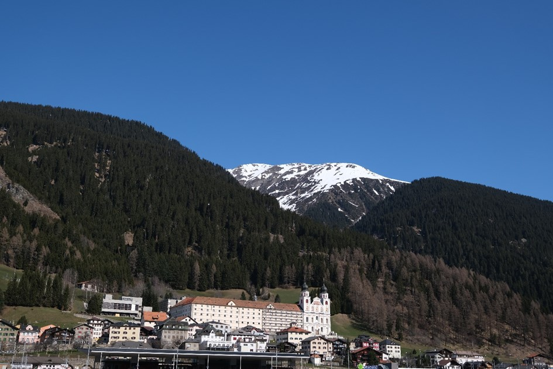
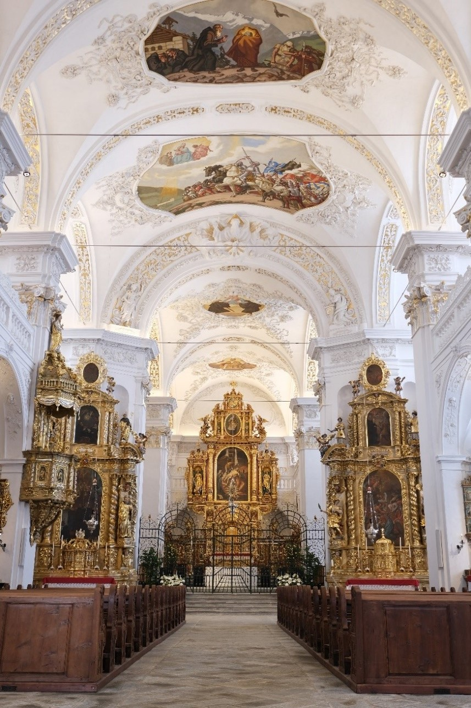

Rund eine Autostunde von Chur entfernt, auf 1130 m ü. M., liegt das kleine Dorf Disentis. Darüber thront der eindrückliche Barockbau der gleichnamigen Benediktinerabtei. Diese feierte 2014 ihr 1400-jähriges Jubiläum und damit eine lange wie auch bewegte Geschichte. Als älteste ununterbrochen bestehende Benediktinerabtei nördlich der Alpen und ältestes Männerkloster Rätiens kommt dem Kloster eine historisch wie theologisch bedeutende Rolle zu. Eine Rolle, welche sich im Laufe der Zeit gewandelt hat und doch bis heute nicht an Bedeutung verliert.
Die Benediktiner Abtei Disentis. (Bild: Bruder Martin Hieronymi OSB)
Gründungserzählung
Die Gründungsgeschichte der Abtei Disentis geht auf den iro-schottischen Mönchsvater Columban (540–615) und dessen Begleiter Sigisbert zurück. Auf ihrer Wanderschaft für Christus gelangten sie ins Urserntal, wo Columban Sigisbert auf eigenen Wunsch zurückliess und mit Gallus weiter nach Schwaben zog. Sigisbert fand derweil einen abgeschiedenen Ort, Desertina (heute Disentis), begann dessen Land zu bewirtschaften und eine Gebetsstätte zu errichten. Die Gründungserzählung berichtet weiter, dass Sigisbert schon bald darauf Anhänger um sich gesammelt haben soll, unter ihnen auch einen gottesfürchtigen Mann namens Placidus. Dieser erlitt in einer Auseinandersetzung mit Victor, wahrscheinlich einem Landesherrn, den Märtyrertod, wobei er, der Legende nach, seinen eigenen abgeschlagenen Kopf an sich nahm und zu Sigisbert zurückeilte. Zeitgleich soll auch Victor unter besonderen Umständen gestorben und die Gebetsstätte Sigisberts mit «vielen Wundern ausgezeichnet» worden sein. Überliefert wurde die Gründungserzählung primär mündlich und durch den liturgischen Gebrauchstext «Passio Placidi». Historisch wahrscheinlich ist, dass sich ein fränkischer Mönch mit der Unterstützung eines einheimischen Placidus am Ausgang des Oberalp- und Lukmanierpasses niederliess und dieser Placidus unter unklaren Umständen starb. Dies mag der Faszination der übersinnlichen Gründungserzählung jedoch keinen Abbruch tun. Placidus und Sigisbert werden bis heute als Klostergründer verehrt. So bleibt das ihnen gewidmete jährliche Hochfest Anfang Juli einer der bedeutendsten Termine im Kalender des Klosters und erfreut sich bis heute grosser Beliebtheit.
(Fast) 1400 Jahre Geschichte
Im Zuge der Gründungserzählung legte Abt Jakob Bundi (1593–1614), aufgrund des Todes von Columban 615 und der Klostergründung in St. Gallen 613, das Gründungsjahr seines Klosters auf das Jahr 614 fest. Eine Gründungsurkunde ist jedoch genauso wenig bekannt wie Quellen, welche diese These untermauern könnten. Gesicherte archäologische und historische Kenntnisse weisen viel mehr auf eine Entstehungszeit um das Jahr 700 hin. Urkundlich erwähnt wird das Kloster erst 765 im Testament eines Churer Bischofs. In den folgenden Jahren blüht die Benediktinerabtei auf. So zählt 810 der Konvent in Disentis 71 Mitglieder und das Kloster verfügt über grosse Ländereien. Mitte des 10. Jahrhunderts wird die Abtei von Sarazenen geplündert und niedergebrannt. Die Mönche müssen fliehen, bauen ihre Kirche jedoch wieder auf. Durch das Wormser Konkordat erhält das Kloster Disentis 1122 weltliche Befugnisse, unter anderem die Rechtsprechung und Marktrechte. Die Äbte können so ihren politischen Einfluss im Tal weiter ausbauen. Diese Blütezeit endet jedoch endgültig mit der Reformation und Gegenreformation im 15. und 16. Jahrhundert. Mehrmals brennt der Klosterkomplex und der Zahn der Zeit nagt unerbittlich an den alten Anlagen. Hinzu kommen Hungersnöte, Pest und Hexenverfolgung. Zwischen 1685 und 1712 wird schliesslich der heutige Barockbau errichtet. Als weitere Zäsur ist das Jahr 1799 und der damit verbundene Überfall französischer Truppen zu nennen. Diese stecken Dorf und Kloster in Brand, rauben Kunstschätze und zerstören Bibliothek sowie Archiv. Die Abtei verliert im Zuge dieser Ereignisse einen grossen Teil ihres Vermögens und ihrer Ländereien. Rund 60 Jahre später treffen die klosterfeindlichen Bestimmungen der Säkularisation das Kloster schwer. Erst ab 1880 erlaubt die Restauration einen Neubeginn, infolgedessen das Kloster seine heutige geistliche wie auch kulturelle Bedeutung für die Region Surselva gewinnt.
Kulturgut mit Bedeutung

Das Kirchenschiff der Klosterkirche St. Martin zu Disentis. (Bild: Bruder Martin Hieronymi OSB)
Neben der Placikrypta und der Marienkirche ist die Klosterkirche St. Martin zu Disentis als besonders beeindruckender Teil der Klosteranlage zu nennen. Das 2019 renovierte Gotteshaus strahlt in hellem Weiss und vermag mit seinen Fresken, Stuckaturen und Deckenbildern zu beeindrucken. Der barocke Kirchenraum, welcher dem Vorarlberger Münsterschema folgt, beherbergt acht Altäre und einen Hochaltar von Melchior Stadler. Aus kunsthistorischer Perspektive ist insbesondere auf die disentiser Stuckfragmente hinzuweisen, welche unter dem Osthof ausgegraben wurden. Diese Überreste religiöser Szenen, mit denen eine Vorgängerkirche aus dem achten Jahrhundert bestückt war, gehören zu den ältesten ihrer Art. So wurden Bildinhalt, Stil und Arbeitstechnik als frühbyzantinisch identifiziert. Sie sind heute im Klostermuseum zu betrachten.
Das Kloster heute – Ein Gemeinschaft zwischen Innovation und Tradition
Nach beinahe 1400 Jahren Geschichte und vielen Höhen wie auch Tiefen lebt das Kloster Disentis bis heute beständig nach dem benediktinischen Motto «ora et labora». Dies bedeutet, dass sich die 19 Mitglieder des Konvents neben ihren geistlichen Pflichten (ora = beten) auch der Arbeit (labora = arbeiten) widmen. In diesem Sinne nimmt die Abtei neben ihren kirchlichen Aufgaben auch eine wichtige regionale Rolle in den Bereichen Tourismus, Kultur und Bildung ein. So bleiben das Gymnasium und Internat Kloster Disentis als zentrale Bildungsinstitution der Surselva bestehen. Auch die Gastronomie- sowie Eventangebote werden rege genutzt und das Museum zählt rund 5000 Besucher jährlich. Ein historisch bedeutender Wirtschaftszweig der Abtei ist die Landwirtschaft, welche im Klosterhof und der Sennerei weiterhin gepflegt wird. Das Kloster und seine Betriebe generieren damit mehrere Dutzend Vollzeitstellen und leisten so einen bedeutenden Beitrag für die Kulturregion Surselva.
Jan Peter Lang ist Geschichtsstudent an der Universität Bern (2021)
Weitere Artikel von {{author.author}} finden Sie hier:
- {{author.location[i]}}: {{author.fulltitle[i]}} {{beitrag}}
Zur Vertiefung:
- Müller, Iso. Benediktinerkloster Disentis. 10. Aufl., Schnell & Steiner, 1988.
- Benediktiner Kloster Disentis (hrsg.). 1400 Jahre Stabilitas in progressu. Edition Punktuell, 2014.
- Benediktiner Kloster Disentis (hrsg.). Die Weisse Arche. Somedia Buchverlag, 2020.